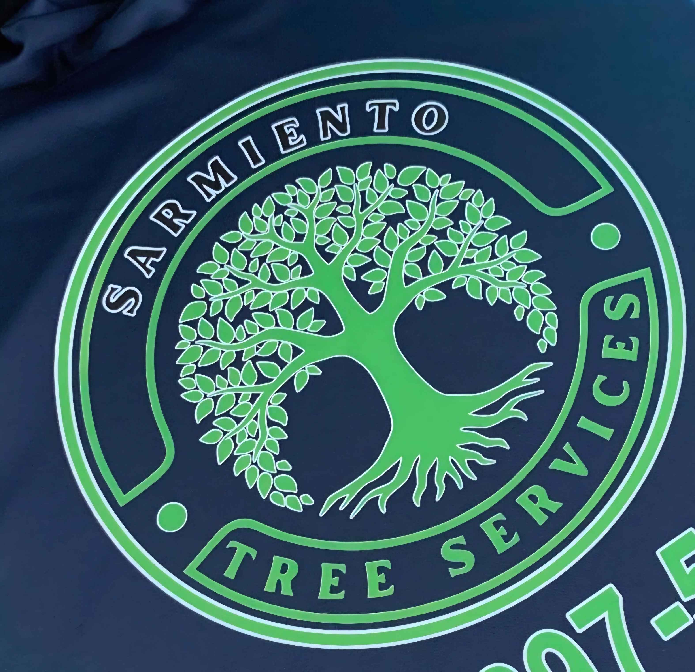
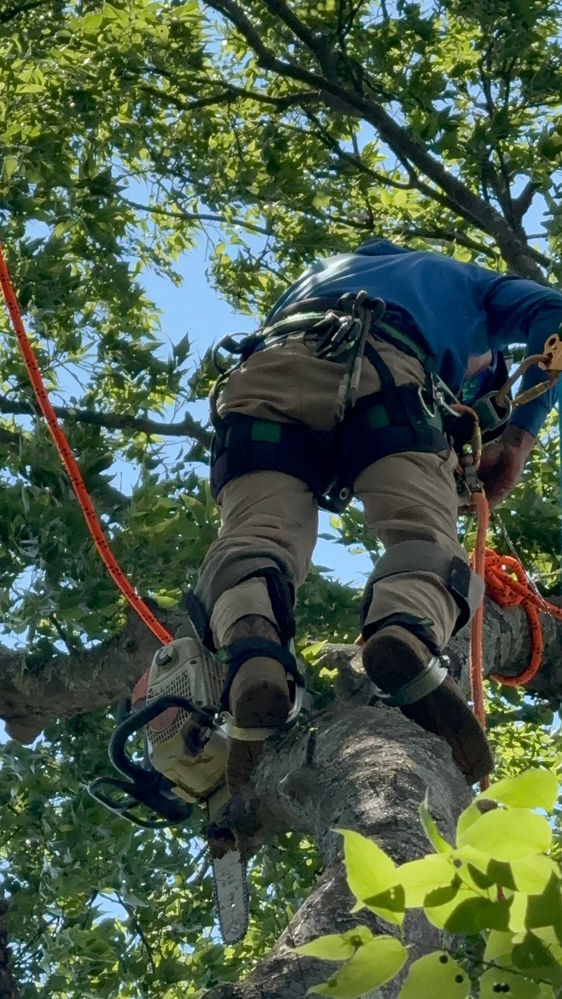
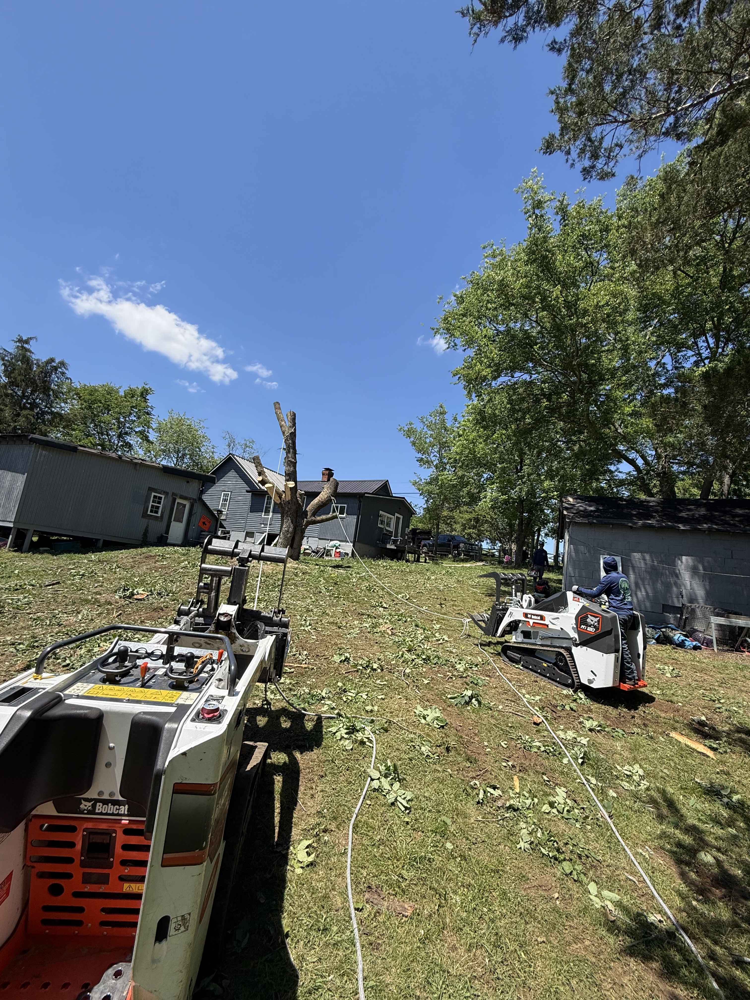
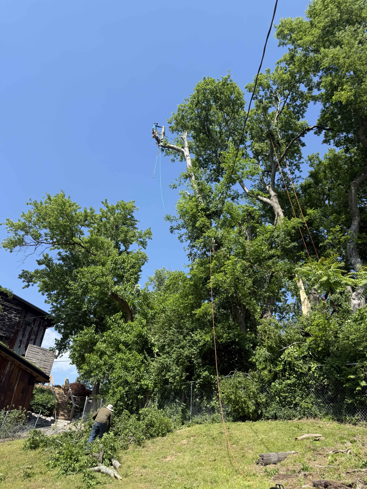
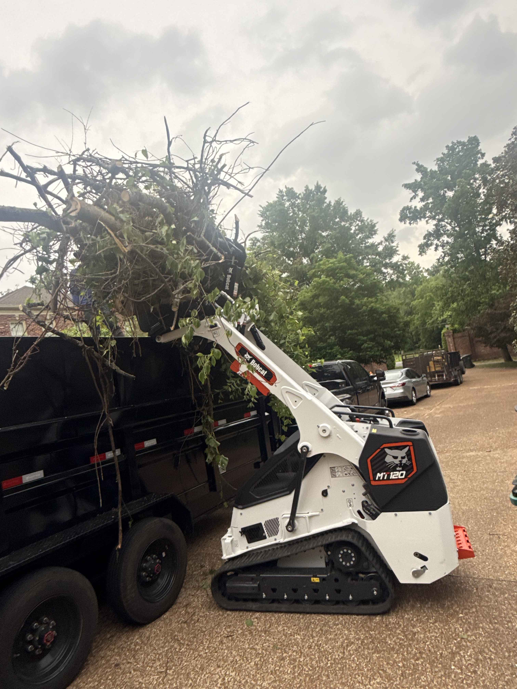

Professional tree removal, trimming, stump grinding, and emergency storm response serving Conroe and surrounding Texas communities. Fast, safe, and fairly priced.
Fully equipped and insured for residential and commercial tree work in Conroe, TX and nearby areas. From small trims to full removals and emergency storm cleanup, we handle it all.
Safe removal of hazardous, dead, or unwanted trees, including tight spaces and close-to-structure work. We use proper rigging, ropes, and equipment to protect your home, roof, fences, and neighbors.
Professional pruning to improve tree health, shape, and clearance from roofs, driveways, and power lines. We remove weak or dangerous limbs before they fall and damage your property.
Clean stump grinding to below ground level so you can replant, landscape, or build over the area. No more tripping hazards or ugly stumps in your yard.
Brush, small trees, and debris cleared efficiently to prepare your property for projects, resale, or new construction. Perfect for overgrown lots and raw land.
24/7 response for storm-damaged trees, fallen limbs, and dangerous hangers threatening your property. When the weather hits hard, we show up fast and handle the heavy work safely.
Do you need professional help for your trees? Look no further. We provide fast, safe, and reliable service so everything runs smoothly from the first call to the final cleanup.
Quick response times and efficient crews to keep your project moving without delays.
We’re standing by day and night for emergency tree situations and storm damage.
Trained climbers, proper rigging, and safety-focused work on every single job.
We treat your property like our own and don’t leave until the job is done right.
Real projects completed by Sarmiento Tree Services. From technical removals to full property cleanups, we handle the heavy work so you don’t have to.




Homeowners and businesses trust Sarmiento Tree Services for safe, professional, and honest work.
“They removed a dangerous tree next to my house. Fast, careful, and very professional.”
“Great communication, fair pricing, and clean work. I recommend them to all my neighbors.”
“They showed up during a storm at 3 A.M. and saved my roof. True professionals.”
“Very skilled climbers. They handled a huge oak safely and left everything spotless.”
Call us for a fast, free estimate. Whether it’s a small trim or an emergency at 3 A.M., we answer and we show up.
Serving Conroe, TX and surrounding communities with reliable, professional tree care. Call, email, or send a quick message below.
📞 Phone: (832) 897-5714
📧 Email: orbinsarmiento@icloud.com
📍 Service Area: Conroe, TX & surrounding communities
⏰ Hours: Open 24/7 for emergency tree service
📍 Google Maps: View location & reviews
For the fastest response, please call or text (832) 897-5714.